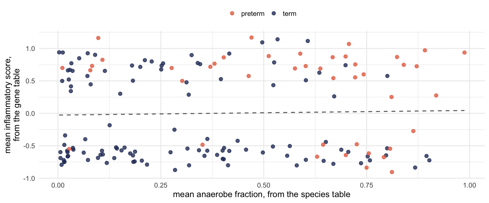
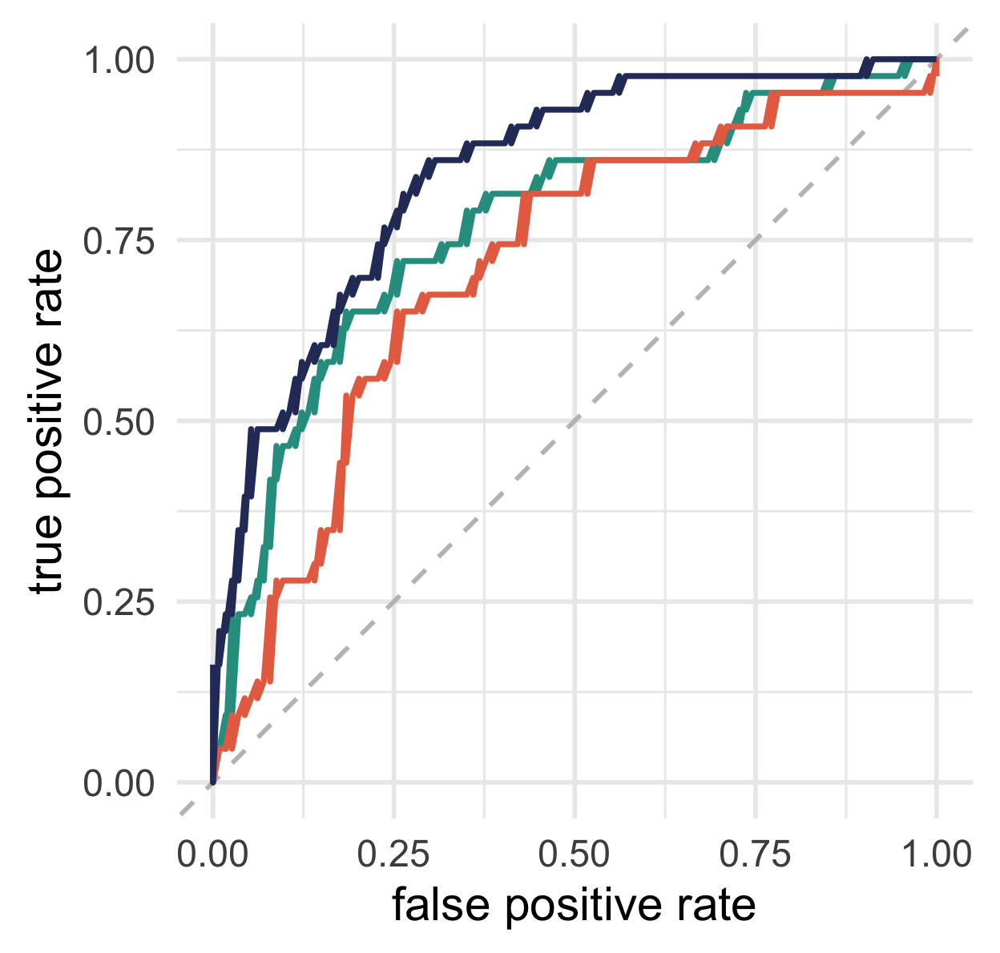
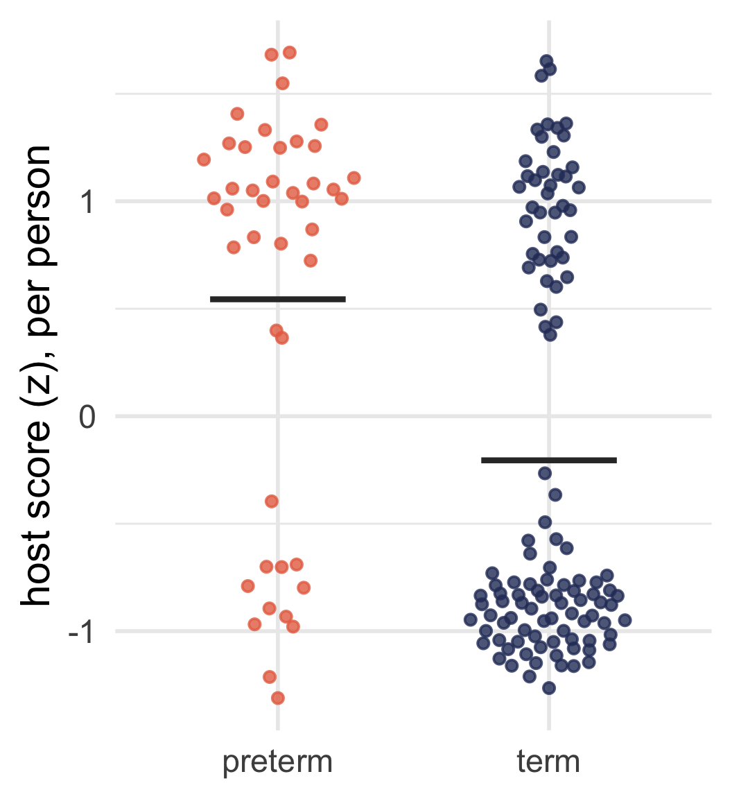
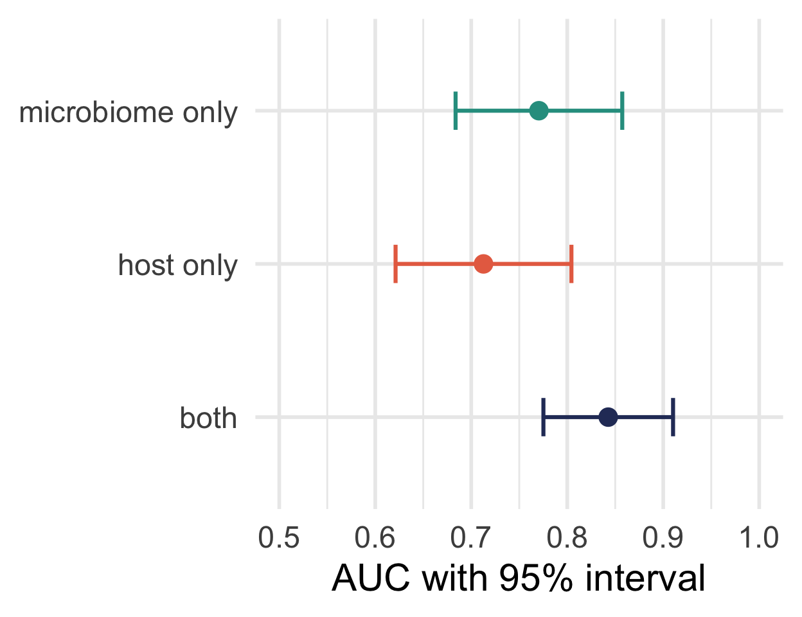

We ran every method this week twice, once on each table, and never on both together.
Today’s question
Does putting the two tables together tell you anything that neither told you alone?
Sometimes, and you can measure when.
When combining helps
If both tables carry the same information, combining them adds nothing beyond a slightly better estimate of that one thing.
If they carry different information, combining them can add a lot.
If one carries nothing, combining them makes your model worse, because you spent degrees of freedom on noise.
So before fitting any model, measure how much the two tables already agree.
One number per person, from each table
# from the species table: how anaerobic is this person, on averagemicro_score <- per_sample |>group_by(participant_id) |>summarise(micro =mean(1- lacto_fraction))# from the gene table: how inflamed, using Thursday's gene sethost_score <- per_sample |>group_by(participant_id) |>summarise(host =mean(inflammatory_score))
The two tables have 14,446 rows between them. After this step they are two columns, one row per person:
participant_id
outcome
micro_score
host_score
P001
term
0.58
-0.80
P002
term
0.27
-0.60
P003
term
0.06
-0.61
The two scores barely agree

Correlation: 0.03.
Low agreement is good news here
The two tables are telling us about different things.
In this cohort a disturbed bacterial community and an inflamed epithelium are separate measurements, and knowing one tells you almost nothing about the other.
So each has something to add.
One model per table, and one with both
glm(preterm ~ micro_z, data = per_person, family = binomial)glm(preterm ~ host_z, data = per_person, family = binomial)glm(preterm ~ micro_z + host_z, data = per_person, family = binomial)
model
AUC
95% interval
AIC
microbiome only
0.77
0.68 to 0.86
157
host only
0.71
0.62 to 0.80
170
both
0.84
0.78 to 0.91
138
ROC curves for each model

Species table alone: AUC 0.77
Gene table alone: AUC 0.71
Both: AUC 0.84
Adding the host score to the microbiome model: p = 4.4e-06.
Two summary scores in one logistic regression are the simplest version of the case for multiomics.
Significance and prediction are different questions
On Tuesday, preterm versus term gave 1,698 significant genes.
Today, those same genes predict the outcome with an AUC of 0.71.
Significance asks whether the groups differ on average.
AUC asks whether you can tell which person is in which group.
Many small differences can give you the first without the second.

Choose the method from the goal
if you want to
you need
improve a prediction
a model with features from both tables
find features that move together
correlation across tables
find shared sample structure
a joint ordination
describe a mechanism
something more than either
Integration methods, simplest first
examples
what it does
simple
scores in one model
Reduce each table to a few numbers and fit one model, as we did today. Every other method has to beat this.
intermediate
canonical correlation, PLS, sparse PLS
Find the combination of features in table A that best tracks a combination in table B.
multi-block
DIABLO, MOFA
Decompose several tables at once into shared and table-specific factors.
similarity-based
Procrustes, co-inertia, DiSTATIS
Compare the sample configurations rather than the features.
networks
Build a graph across data types and look at its structure.
The cost of each method
gives you
costs you
scores in one model
interpretability
you chose the scores by hand
sparse PLS
feature pairs
tuning, and unstable selection
DIABLO, MOFA
shared factors
sample size, and hard-to-explain factors
Procrustes
one agreement statistic
no features, no prediction
networks
a picture
almost unlimited freedom to fool yourself
All of them can overfit
With 157 people and 14,446 features, you can find a combination that separates your groups perfectly.
It will not replicate.
Every method on that list needs cross-validation or a held-out set, and the fancier the method the more it needs it.
Our own result, honestly stated
We chose both scores after looking at the data all week.
We never held out a test set.
AUC 0.84 with a 95% interval of 0.78 to 0.91.
The two intervals for the single-table models overlap each other.

The improvement is real, but we should be modest about how big it is, and say both when we report it.
Talk to your neighbour
Find someone whose research you do not know.
Partner A, then swap:
What is your research question?
What data types do you have, or want?
What would combining them tell you that one alone would not?
Reporting back
One volunteer: explain your partner’s project, and whether integration would actually help them.
Further reading
The methods deck linked from this module’s page covers many more methods
mixOmics for CCA, PLS and DIABLO, with good vignettes
MOFA, if you have several tables and enough samples
Modern Statistics for Modern Biology, Holmes and Huber, free online
Then: your presentations
Thirty minutes to finish preparing. Then each Study A group pairs with the Study B group of the same number: A1 presents to B1 for 30 minutes, then B1 presents to A1.
Tell the other group what you asked, what you found, and what you do not believe about your own result.